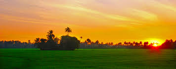
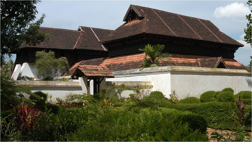

ALLEPPEY
The ‘Backwater Paradise in God’s Own Country’! Located around 62km from the stunning city of Cochin and around 155km from Trivandrum, Alleppey or ‘Alappuzha’ is among the most coveted tourist destinations in Kerala.
How to Reach Alleppey
-
By Road
KSRTC has regular buses to Alleppey from almost all the major cities in God’s Own Country; visitors can easily avail luxury, premium or regular buses to reach Alleppey. Regular buses are also available from nearby cities like Bangalore, Chennai, Mysore, and Coimbatore.
-
By Train
Alleppey has its own railway station, and is well-connected with cities like Trivandrum, Cochin, and other major cities. The station also offers passage to several other passenger mails plying from cities outside the state.
-
By Air
Cochin International Airport is less than 100km away from Alleppey, and is well-connected with major Indian cities through regular flights. Visitors from within the country and several international destinations can book a flight to this airport, and hire private taxis or cans to reach Alleppey.
Best Time to Visit Alleppey
-
Winter
If you are planning for a Kerala trip and visit the magical lands of Alleppey, you must book your tour during the winters. During this period of the year, temperature remains pleasant and offers amazing options to the visitors.
-
Monsoon
Alleppey looks stunning during the monsoons! However, this is not the season for backwater tourism, but one can sit back and laze around the locales while revelling in the miraculous rain-washed beauty of Alleppey.
The Beauty of Alleppey
-
Vembanad Lake

-
Kuttanad
 -
Alleppey Beach

-
Krishnapuram Palace

Best place to stay
- Punnamada Resort
- Abad Turtle Beach
- Lake Palace Resort
- Uday Serenity Backwater Resort